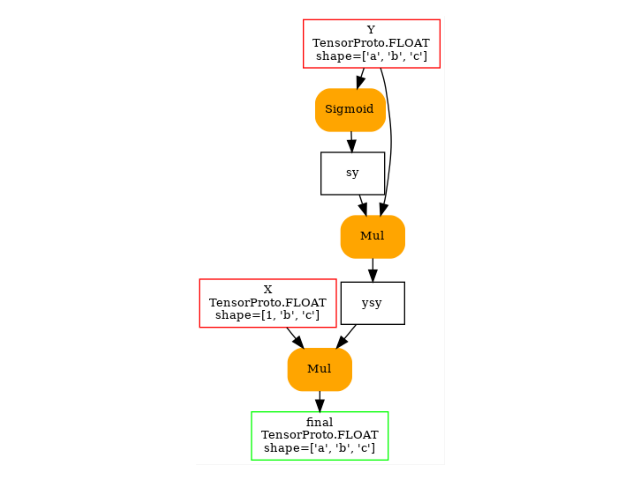

Note
Go to the end to download the full example code.
101: Onnx Model Rewriting¶
This example shows how to rewrite a graph using a pattern.
A model¶
from typing import List, Optional
import onnx.helper as oh
from onnx import NodeProto, TensorProto
from onnx_array_api.plotting.text_plot import onnx_simple_text_plot
from onnx_array_api.plotting.graphviz_helper import plot_dot
from experimental_experiment.xbuilder.graph_builder import (
GraphBuilder,
OptimizationOptions,
)
from experimental_experiment.xoptim import EasyPatternOptimization
proto = oh.make_model(
oh.make_graph(
[
oh.make_node("Sigmoid", ["Y"], ["sy"]),
oh.make_node("Mul", ["Y", "sy"], ["ysy"]),
oh.make_node("Mul", ["X", "ysy"], ["final"]),
],
"nd",
[
oh.make_tensor_value_info("X", TensorProto.FLOAT, [1, "b", "c"]),
oh.make_tensor_value_info("Y", TensorProto.FLOAT, ["a", "b", "c"]),
],
[oh.make_tensor_value_info("final", TensorProto.FLOAT, ["a", "b", "c"])],
),
opset_imports=[oh.make_opsetid("", 18)],
ir_version=9,
)
print(onnx_simple_text_plot(proto))
opset: domain='' version=18
input: name='X' type=dtype('float32') shape=[1, 'b', 'c']
input: name='Y' type=dtype('float32') shape=['a', 'b', 'c']
Sigmoid(Y) -> sy
Mul(Y, sy) -> ysy
Mul(X, ysy) -> final
output: name='final' type=dtype('float32') shape=['a', 'b', 'c']
And visually.
<Axes: >
The pattern¶
class MulMulSigmoidPattern(EasyPatternOptimization):
def match_pattern(self, g: GraphBuilder, X, Y):
return g.op.Mul(X, g.op.Mul(Y, g.op.Sigmoid(Y)))
def apply_pattern(self, g: GraphBuilder, X, Y):
return g.anyop.MulMulSigmoid(X, Y, domain="onnx_extended.ortops.optim.cuda")
Optimization¶
gr = GraphBuilder(
proto,
infer_shapes=True,
optimization_options=OptimizationOptions(
patterns=[MulMulSigmoidPattern(verbose=1)],
verbose=1, # a higher value increases the verbosity when optimizations for patterns
),
)
new_proto = gr.to_onnx()
print(onnx_simple_text_plot(new_proto))
[GraphBuilder.optimize] start with 3 nodes
[GraphBuilder.optimize] options=OptimizationOptions(remove_unused=True, remove_identity=True,
constant_folding=False, constant_size=1024, constant_fusing=True, verbose=1,
max_iter=-1, recursive=False, processor=CPU, order=None,
patterns=['MulMulSigmoidPattern'])
[GraphBuilderPatternOptimization.optimize] start with 3 nodes and 1 patterns, priorities=[0]
[GraphBuilderPatternOptimization.optimize] use pattern 1/1 - P0 - MulMulSigmoidPattern()
[GraphBuilderPatternOptimization.optimize] iteration 0: 3 nodes, priority=0
[GraphBuilderPatternOptimization.optimize] applies 1 matches, [0]=MatchResult: MulMulSigmoidPattern replaces ['Sigmoid', 'Mul', 'Mul'] - time=0.000 | max_time=MulMulSigmoidPattern:0.000
[GraphBuilderPatternOptimization.optimize] iteration 1: 1 nodes, priority=0
[GraphBuilderPatternOptimization.optimize] done after 2 iterations with 1 nodes in 0.001
[GraphBuilder.optimize] done with 1 nodes in 0.002
STAT apply_MulMulSigmoidPattern +1 -3 #it=1 maxmatch=0 i=1 - time=0.0003170159998262534
STAT build_for_pattern +0 -0 #it=2 maxmatch=0 i=0 - time=1.8477999219612684e-05
STAT check_A +0 -0 #it=0 maxmatch=0 i=0 - time=1.5042000086396001e-05
STAT check_B +0 -0 #it=0 maxmatch=0 i=0 - time=6.488000508397818e-06
STAT check_C +0 -0 #it=0 maxmatch=0 i=0 - time=6.371999916154891e-06
STAT check_F +0 -0 #it=0 maxmatch=0 i=0 - time=7.153000296966638e-06
STAT check_G +0 -0 #it=0 maxmatch=0 i=0 - time=4.078000529261772e-06
STAT check_pattern_00 +0 -0 #it=1 maxmatch=0 i=0 - time=9.987000339606311e-06
STAT check_pattern_A0 +0 -0 #it=1 maxmatch=0 i=0 - time=5.816999873786699e-06
STAT check_pattern_B0 +0 -0 #it=2 maxmatch=0 i=0 - time=1.0894999832089525e-05
STAT match_MulMulSigmoidPattern +0 -0 #it=2 maxmatch=1 i=1 - time=0.0008797199998298311
STAT pattern_optimization +0 -2 #it=0 maxmatch=0 i=0 - time=0.001547962000586267
STAT remove_identity_nodes +0 -0 #it=2 maxmatch=0 i=0 - time=4.476899903238518e-05
STAT remove_unused +0 -0 #it=0 maxmatch=0 i=0 - time=3.32710005750414e-05
--MODEL: 1 nodes, 2 inputs, 1 outputs, 0 initializers--
INPUT: 2 x 1t
OUTPUT: 1 x 1t
NODE: 1 x onnx_extended.ortops.optim.cuda.MulMulSigmoid
--MODEL: 1 nodes, 2 inputs, 1 outputs, 0 initializers--DETAILED--
INPUT: 1 x 1t[1xbxc]
INPUT: 1 x 1t[axbxc]
OUTPUT: 1 x 1t[axbxc]
NODE: 1 x onnx_extended.ortops.optim.cuda.MulMulSigmoid -SIG- 1t[1xbxc], 1t[axbxc]
opset: domain='' version=18
opset: domain='onnx_extended.ortops.optim.cuda' version=1
input: name='X' type=dtype('float32') shape=[1, 'b', 'c']
input: name='Y' type=dtype('float32') shape=['a', 'b', 'c']
MulMulSigmoid[onnx_extended.ortops.optim.cuda](X, Y) -> final
output: name='final' type=dtype('float32') shape=['a', 'b', 'c']
And visually.
<Axes: >
Filtering¶
Let’s assume now we want to apply the pattern only when the shapes are identical.
class MulMulSigmoidPattern2(EasyPatternOptimization):
def match_pattern(self, g: GraphBuilder, X, Y):
return g.op.Mul(X, g.op.Mul(Y, g.op.Sigmoid(Y)))
def apply_pattern(self, g: GraphBuilder, X, Y):
return g.anyop.MulMulSigmoid(X, Y, domain="onnx_extended.ortops.optim.cuda")
def validate_mapping(
self,
g: GraphBuilder,
deleted_nodes: List[NodeProto],
pattern_nodes: Optional[List[NodeProto]] = None,
) -> bool:
for node in deleted_nodes:
if (
node.op_type == "Mul"
and g.has_shape(node.input[0])
and g.has_shape(node.input[1])
):
sh1 = g.get_shape(node.input[0])
sh2 = g.get_shape(node.input[1])
if sh1 != sh2:
if self.verbose > 0:
print(
f"[MulMulSigmoidPattern2.validate_mapping] "
f"match not valid because shapes are different"
f"{node.input[0]}:{sh1} != {node.input[1]}:{sh2}"
)
return False
return True
gr = GraphBuilder(
proto,
infer_shapes=True,
optimization_options=OptimizationOptions(
patterns=[MulMulSigmoidPattern2(verbose=1)],
verbose=0,
),
)
new_proto = gr.to_onnx()
print(onnx_simple_text_plot(new_proto))
[MulMulSigmoidPattern2.validate_mapping] match not valid because shapes are differentX:(1, 'b', 'c') != ysy:('a', 'b', 'c')
opset: domain='' version=18
input: name='X' type=dtype('float32') shape=[1, 'b', 'c']
input: name='Y' type=dtype('float32') shape=['a', 'b', 'c']
Sigmoid(Y) -> sy
Mul(Y, sy) -> ysy
Mul(X, ysy) -> final
output: name='final' type=dtype('float32') shape=['a', 'b', 'c']
Total running time of the script: (0 minutes 0.126 seconds)